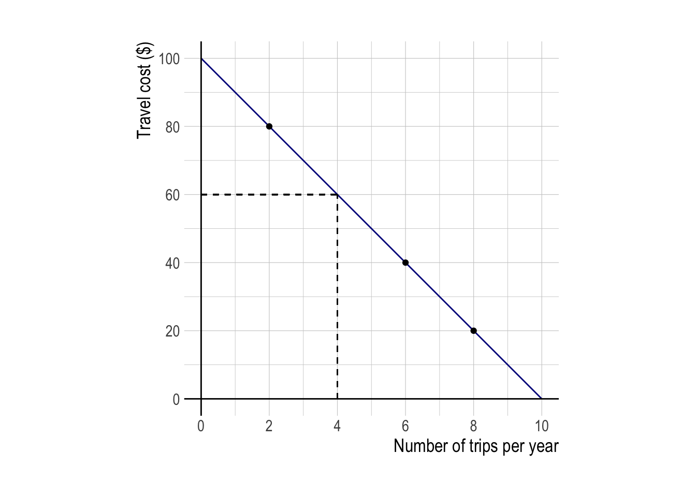

ECON 340: Homework Assignment 2
Question 1. Negative Externalities II
Consider a society with just two consumers. Consumer 1 can get positive utility from a positive amount of some activity \(h\) that she chooses the level of, but consumer 2 gets negative utility from that activity. We can think of \(h\) as some non-market good, for example, “hours” of loud music played by consumer 1, disturbing consumer 2’s peace and quiet. Consumer 1 therefore imposes a negative externality on consumer 2. Assume there is no other cost associated with the activity.
Assume that both consumers gain utilities from consuming a numeraire good \(x\), whose price is 1, but may have different incomes \(Y_{1}\) and \(Y_{2}\).
- Consumer 1’s utility is \(U_{1} = x_{1} + h(4-h)\).
- Consumer 2’s utility is \(U_{2} = x_{2} - h^{2}\).
Q1e.
- Suppose that, instead of a tax or a subsidy, the government introduces a marketable-permit scheme.
- It gives consumer 2 a bunch of pieces of paper called “permits,” each of which states that the holder of the permit has the legal right to “produce” one unit of \(h\).
- It then allows consumer 2 to sell those permits to consumer 1 at some uniform price \(p_{h}\).
- Assume that the permit market is competitive.
- This means that each consumer takes the price \(p_{h}\) as given.
- You can think of each consumer as “representing” a large number of consumers of the same type.
- Show that the scheme will also achieve the socially optimal outcome \(h^{o}\).
Answer:
Let \(h_{s}\) denote the amount of permits supplied by consumer 2. Given the price \(p_{h}\), consumer 2 solves problem (C-2-permit-s) choosing how much to consume \(x_{2}\) and how much to sell \(h_{s}\):
\[ \begin{align} \max_{x_{2}, h_{s}} \; &U_{2} = x_{2} - h_{s}^{2} \tag{C-2-permit-s}\\ \text{subject to}\quad &Y_{2} + p_{h}h_{s} = x_{2} \tag{BC-2-permit-s} \end{align} \]
Substituting \(x_{2}\) in the \(U_{2}\) using (BC-2-permit-s) simplifies problem (C-2-permit-s) to: \[ \begin{align} \max_{h_{s}} \; &U_{2} = Y_{2} + p_{h}h_{s} - h_{s}^{2} \tag{C-2-permit-s'} \end{align} \]
First-order condition for problem (C-2-permit-s’) is
\[ \frac{d U_{2}}{d h_{s}} = p_{h} - 2h_{s} = 0,\tag{FOC-C-2-h-s} \] which determines the supply curve for permits, \(h_{s}(p_{h}) = \frac{1}{2}p_{h}\).
Let \(h_{d}\) denote the amount of permits consumer 1 buys. Given the price \(p_{h}\), consumer 1 solves problem (C-1-permit-d) choosing how much to consume \(x_{1}\) and how much to buy \(h_{d}\):
\[ \begin{align} \max_{x_{1}, h_{d}} \; &U_{1} = x_{1} + h_{d}(4-h_{d}) \tag{C-1-permit-d}\\ \text{subject to}\quad &Y_{1} = x_{1} + p_{h}h_{d}\tag{BC-1-permit-d} \end{align} \]
Substituting \(x_{1}\) in the \(U_{1}\) using (BC-1-permit-d) simplifies problem (C-1-permit-d) to: \[ \begin{align} \max_{h_{d}} \; &U_{1} = Y_{1} - p_{h}h_{s} + h_{d}(4-h_{d}) \tag{C-1-permit-d'} \end{align} \]
First-order condition for problem (C-1-permit-d’) is
\[ \frac{d U_{1}}{d h_{d}} = -p_{h} + 4 - 2h_{d} = 0,\tag{FOC-C-1-h-d} \] which determines the demand curve for permits, \(h_{d}(p_{h}) = 2 - \frac{1}{2}p_{h}\).
Next, we move up to the market outcome. In the permit market, the equilibrium price \(p_{h}^{*}\) is determined in a way that clears the permit market—the quantity supplied equals the quantity demanded:
\[ \begin{align} h_{s}(p_{h}^{*}) &= h_{d}(p_{h}^{*})\tag{market}\\ \Leftrightarrow\qquad \frac{1}{2}p_{h}^{*} &= 2 - \frac{1}{2}p_{h}^{*} \end{align} \] Therefore, the price and the quantity in the equilibrium are \(p_{h}^{*} = 2\) and \(h_{s}^{*} = h_{d}^{*} = h^{o} = 1\), achieving the socially optimal outcome \(h^{o}\).
Q1f.
- Same question as Q1e, but now the government introduces a marketable-permit scheme that gives a bunch of permits to consumer 1, and then gives consumer 2 an opportunity to buy them away from consumer 1 and “retire” them.
Answer:
Let \(h_{s}\) denote the amount of permits demanded by consumer 2. Given the price \(p_{h}\), consumer 2 solves problem (C-2-permit-s) choosing how much to consume \(x_{2}\) and how much to buy and retire \(h_{d}\):
\[ \begin{align} \max_{x_{2}, h_{d}} \; &U_{2} = x_{2} - (h^{*} - h_{d})^{2} \tag{C-2-permit-d}\\ \text{subject to}\quad &Y_{2} = x_{2} + p_{h}h_{d} \tag{BC-2-permit-d} \end{align} \]
Note that the amount of activity \(h^{*}-h_{d}\) is the amount of that activity consumer 1 will enjoy, where \(h^{*}\) is the free market level consumer 1 chooses in Q1b.
Substituting \(x_{2}\) in the \(U_{2}\) using (BC-2-permit-d) simplifies problem (C-2-permit-d) to: \[ \begin{align} \max_{h_{d}} \; &U_{2} = Y_{2} - p_{h}h_{d} - (h^{*}-h_{d})^{2} \tag{C-2-permit-d'} \end{align} \]
First-order condition for problem (C-2-permit-d’) is
\[ \frac{d U_{2}}{d h_{s}} = -p_{h} + 2(h^{*}-h_{d}) = 0,\tag{FOC-C-2-h-d} \] which determines the demand curve for permits, \(h_{d}(p_{h}) = h^{*}-\frac{1}{2}p_{h}\).
Let \(h_{s}\) denote the amount of permits consumer 1 sells. Given the price \(p_{h}\), consumer 1 solves problem (C-1-permit-s) choosing how much to consume \(x_{1}\) and how much to sell \(h_{s}\):
\[ \begin{align} \max_{x_{1}, h_{s}} \; &U_{1} = x_{1} + (h^{*}-h_{s})[4-(h^{*}-h_{s})] \tag{C-1-permit-s}\\ \text{subject to}\quad &Y_{1} + p_{h}h_{s} = x_{1} \tag{BC-1-permit-s} \end{align} \]
Substituting \(x_{1}\) in the \(U_{1}\) using (BC-1-permit-s) simplifies problem (C-1-permit-s) to: \[ \begin{align} \max_{h_{d}} \; &U_{1} = Y_{1} + p_{h}h_{s} + (h^{*}-h_{s})[4-(h^{*}-h_{s})] \tag{C-1-permit-s'} \end{align} \]
First-order condition for problem (C-1-permit-s’) is
\[ \frac{d U_{1}}{d h_{s}} = p_{h} -[4-(h^{*}-h_{s})] + (h^{*}-h_{s}) = 0,\tag{FOC-C-1-h-s} \] which determines the supply curve for permits, \(h_{s}(p_{h}) = \frac{1}{2}p_{h} + h^{*} - 2\).
Next, we move up to the market outcome. In the permit market, the equilibrium price \(p_{h}^{**}\) is determined in a way that clears the permit market—the quantity supplied equals the quantity demanded:
\[ \begin{align} h_{s}(p_{h}^{**}) &= h_{d}(p_{h}^{**})\tag{market'}\\ \Leftrightarrow\qquad \frac{1}{2}p_{h} + h^{*} - 2 &=h^{*}-\frac{1}{2}p_{h} \end{align} \] Therefore, the price and the quantity in the equilibrium are \(p_{h}^{**} = 2\) and \(h_{s}^{**} = h_{d}^{**} = h^{**} - 1 = h^{o}\), achieving the socially optimal outcome \(h^{o}\).
Q1g.
Suppose that, instead of trying to intervene in the market, the government just passes a law giving consumer 2 a clearly defined right to have \(h = 0\) (e.g., it imposes a noise ordinance that forbids consumer 1 from playing loud music), but then allows consumer 1 to effectively “bribe” consumer 2 to give up some of that right (i.e., allow some music playing) in exchange for a lump-sum transfer \(T\).
Show that this, too, will restore social optimality.
Answer:
For convenience, let \(U_{2}(x_{2}, h )\) denote consumer 2’s utility. Consumer 2 will accept the consumer 1’s lump-sum transfer \(T\) when her utility with accepting the transfer is no less than her utility with insisting on her right to have \(h = 0\):
\[ \begin{align} U_{2}(x_{2}, h ) + T \;\geq\; & U_{2}(x_{2}, 0) \tag{min-T-2} \\ \Leftrightarrow\qquad x_{2} - h^{2} + T \;\geq\; & x_{2} \\ \Leftrightarrow\qquad\qquad\qquad\;\, T \;\geq\; & h^{2} \end{align} \]
Notice that bargaining condition (min-T-2) holds with equality at the optimum. In the bargaining process for choosing \(T\) and \(h\), consumer 1 tries to minimize the amount of bribery transfer, while respecting consumer 2’s bargaining condition (min-T-2). Consumer 1 will end up exactly compensating consumer 2 for the disutility from \(h\) imposed.
Anticipating consumer 2’s response to the transfer, (min-T-2) with equality, consumer 1 solves problem (C-1-bargain-T) by choosing how much to consume \(x_{2}\), how much to do the activity \(h\), and how much to transfer \(T\): \[ \begin{align} \max_{x_{1}, h, T} \; &U_{1} = x_{1} + h(4-h) \tag{C-1-bargain-T}\\ \text{subject to}\quad &Y_{1} = x_{1} + T \tag{BC-1-bargain-T}\\ &T \;=\, h^{2} \tag{min-T-2'} \end{align} \]
Substituting \(x_{1}\) in the \(U_{1}\) using (BC-1-bargain-T) simplifies problem (C-1-bargain-T) to: \[ \begin{align} \max_{h, T} \; &U_{1} = Y_{1} - T + h(4-h) \tag{C-1-bargain-T'}\\ \text{subject to}\quad &T \;=\, h^{2} \tag{min-T-2'} \end{align} \] Substituting \(T\) in the \(U_{1}\) using (min-T-2’) simplifies problem (C-1-bargain-T’) further: \[ \begin{align} \max_{h} \; &U_{1} = Y_{1} - h^{2} + h(4-h) \tag{C-1-bargain-T''} \end{align} \] Notice that consumer 1 ends up maximizing welfare when it comes to choosing \(h\)! First-order condition for problem (C-1-bargain-T’’) is
\[ \frac{d U_{1}}{d h} = -2h + 4 - 2h = 0. \] Therefore, \(h^{b} = h^{o} = 1\), restoring socially optimal level of \(h\).
In this Coasian bargaining, consumer 1 ends up exactly compensating consumer 2 for the disutility from \(h\) imposed, and in that sense “internalizing” the externality.
Q1h.
- Same question as Q1g, but now the government gives consumer 1 a clear legal right to \(h^{*}\) (i.e., in our example, a right to play as much loud music as she likes), and then allows consumer 2 to effectively “bribe” consumer 1 to give up some of that right (i.e., cut back on her music playing) in exchange for a lump-sum transfer \(T\).
Answer:
For convenience, let \(U_{1}(x_{1}, h )\) denote consumer 1’s utility. Consumer 1 will accept the consumer 2’s lump-sum transfer \(T\) when his utility with accepting the transfer is no less than his utility with insisting on his right to have \(h = h^{*}\):
\[ \begin{align} U_{1}(x_{1}, h ) + T \;\geq\; & U_{1}(x_{1}, h^{*})\tag{min-T-1} \\ \Leftrightarrow\quad x_{1} + h(4-h) + T \;\geq\; & x_{1} + h^{*}(4-h^{*}) \\ \Leftrightarrow\qquad\qquad\qquad\qquad\, T \;\geq\; & h^{*}(4-h^{*}) - h(4-h) \end{align} \] Notice that bargaining condition (min-T-1) holds with equality at the optimum. In the bargaining process for choosing \(T\) and \(h\), consumer 2 tries to minimize the amount of bribery transfer, while respecting consumer 1’s bargaining condition (min-T-1). Consumer 2 will end up exactly compensating consumer 1 for his “disutility” by reducing activity from \(h^{*}\) to \(h\).
Anticipating consumer 1’s response to the transfer, (min-T-1) with equality, consumer 2 solves problem (C-2-bargain-T) by choosing how much to consume \(x_{2}\), how much to transfer \(T\), and how much to let consumer 1 do \(h\) with the transfer: \[ \begin{align} \max_{x_{2}, T, h} \; &U_{2} = x_{2} - h^{2} \tag{C-2-bargain-T}\\ \text{subject to}\quad &Y_{2} = x_{2} + T \tag{BC-2-bargain-T}\\ &T \;=\, h^{*}(4-h^{*}) - h(4-h) \tag{min-T-2'} \end{align} \]
Substituting \(x_{2}\) in the \(U_{2}\) using (BC-2-bargain-T) simplifies problem (C-2-bargain-T) to: \[ \begin{align} \max_{T, h} \; &U_{2} = Y_{2} - T - h^{2} \tag{C-2-bargain-T'}\\ \text{subject to}\quad &T \;=\, h^{*}(4-h^{*}) - h(4-h) \tag{min-T-1'} \end{align} \]
Substituting \(T\) in the \(U_{2}\) using (min-T-1’) simplifies problem (C-2-bargain-T’) further: \[ \begin{align} \max_{h} \; &U_{2} = Y_{2} - h^{*}(4-h^{*}) + h(4-h) - h^{2} \tag{C-2-bargain-T''} \end{align} \]
Notice that consumer 2 ends up maximizing welfare when it comes to inducing \(h\)! First-order condition for problem (C-2-bargain-T’’) is
\[ \frac{d U_{2}}{d h} = -2h + 4 - 2h = 0. \] Therefore, \(h^{b'} = h^{o} = 1\), restoring again socially optimal level of \(h\).
Question 2. Measuring the Benefit of Environmental Quality
Consider the consumer, Amazon, whose utility is described as follows:
\[ \begin{align} U(x, q) = x^{\frac{2}{3}}q^{\frac{1}{3}} \end{align} \] Amazon values (1) the monetary amount, denoted by \(\$x\), that she possesses and (2) the size of the forest area she owns, measured in hectares (ha), represented by \(q\).
Suppose Amazon holds $1,000,000,000. She is currently contemplating an ambitious initiative titled “Quadrupling the Amazon Forest,” aimed at expanding its forest area. Please respond to the following questions:
Q2a.
What amount is Amazon willing to pay (WTP) to expand the forest area to four times its current size?
What compensation is Amazon willing to accept (WTA) to forego the “Quadrupling the Amazon Forest” project?
Answer:
Let \(WTP\) denote Amazon’s willingness to pay to expand the forest area to four times its current size. Also, let \(WTA\) denote Amazon’s willingness to accept to forego the “Quadrupling the Amazon Forest” project. Let \(q_{0}\) denote the current size of the forest area. For convenience, let \(\hat{x} = 10^9\).
By the definition of WTP and WTA, the following equations hold: \[ \begin{align} U(\hat{x} - WTP,\, 4q_{0}) &=\; U(\hat{x},\, q_{0})\tag{eq-WTP}\\ U(\hat{x} + WTA,\, q_{0}) &=\; U(\hat{x},\, 4q_{0})\tag{eq-WTA} \end{align} \] Equation (eq-WTP) implies that \[ \begin{align} (\hat{x} - WTP)^{\frac{2}{3}} (4q_{0})^{\frac{1}{3}} &=\; (\hat{x})^{\frac{2}{3}} (q_{0})^{\frac{1}{3}}\\ \Leftrightarrow\qquad (\hat{x} - WTP) (4q_{0})^{\frac{1}{2}} &=\; (\hat{x}) (q_{0})^{\frac{1}{2}}\\ \Leftrightarrow\qquad\qquad\quad\;\, \hat{x} - WTP &=\;\frac{\hat{x}}{2} \end{align} \] Therefore, \(WTP\) = $500,000,000.
Equation (eq-WTA) implies that \[ \begin{align} (\hat{x} + WTA)^{\frac{2}{3}} (q_{0})^{\frac{1}{3}} &=\; (\hat{x})^{\frac{2}{3}} (4q_{0})^{\frac{1}{3}}\\ \Leftrightarrow\qquad (\hat{x} + WTA) (q_{0})^{\frac{1}{2}} &=\; (\hat{x}) (4q_{0})^{\frac{1}{2}}\\ \Leftrightarrow\qquad\qquad\quad\;\, \hat{x} + WTA &=\;2\hat{x} \end{align} \] Therefore, \(WTA\) = $1,000,000,000.
Q2b.
Are your calculations for WTP and WTA identical or do they differ? Please explain the reasons behind your assessment of their similarity or difference.
Answer:
\(WTA\) is twice greater than \(WTP\). The reason is that Amazon’s utility displays diminishing marginal rate of substitution (MRS), meaning that as Amazon possesses more dollars relative to forests, the MRS decreases.
\[ MRS = \frac{\frac{\partial U}{\partial x}}{\frac{\partial U}{\partial q}} = 2\times\frac{q}{x}. \] For your information, Amazon’s MRS represents the rate at which Amazon is willing to substitute one dollar for forest while keeping her utility constant.
Amazon’s MRS means that as Amazon is willing to give up fewer units of forest to get an additional dollar as she possess more dollars. Because Amazon is actually made richer when she is compensated for giving up the “Quadrupling the Amazon Forest” project than when she pays to expand the forest area, WTA is higher than WTP.
Question 3. Travel Cost
Now it is time for your first consulting job as an environmental economist. The Forest Service would like to know whether they should set aside some National Forest land, previously slated to be logged, for hiking. You are helping do a travel-cost analysis to estimate the benefits of the set-aside.
Survey data has been gathered from 500 hikers who visited a forest in a neighboring state. Using a statistical technique called regression analysis, you have controlled for differences in income, employment status, age and other important factors that might affect the number of hiking trips taken. Taking these factors into account, you have developed the following relationship:
| Cost to get to Hiking Areas | # of Hiking Trips Per Person Per Year |
|---|---|
| $20 | 8 |
| $40 | 6 |
| $80 | 2 |
Q3a.
- Graph the demand curve for hiking trips as a function of the “price”—the travel cost.
Answer:
Assuming the demand curve is linear, we can graph it as follows:
Q3b.
Based on demographic information about the people living in the vicinity of the proposed park, you have estimated that 50,000 people will take an average of 4 hiking trips per year.
For the average person, calculate:
- The consumer surplus for a single visit to the new park by a visitor with travel costs of $20;
- The total consumer surplus for an average visitor (hint: the area of a triangle is \(\frac{1}{2}(B*H)\) ); and
- The total expected consumer surplus per year from the proposed park.
Answer:
CS for the first trip is the WTP less the travel cost; Then, CS is \(\$90 - \$20 = \$70\).
CS for the average person is the triangle area under the demand curve for the average number of trips (4) and above the cost curve. The average travel costs must be $60, if 4 trips are taken. Therefore, CS is \(\frac{1}{2}\times(100-60)\times4 = \$80\).
Total CS is average CS times the expected number of visitors: \(50,000*\$80 = \$4,000,000\).